ジリ 攻略ガイド｜ヒーローウォーズ ドミニオン エラ – タンクスキル・チーム編成と育成優先度
- 著者: Alexandre Domingos. .
砂漠の守護者ジリをご紹介します。アクレブ・ウンミの力を借りて味方を守る強力なタンクヒーローです！ジリは単なる壁ではありません。比類なき耐久力と、ダメージを反射し死をも回避する神秘的な能力を持つ、強靭な前衛戦士です。
ヒーローウォーズ ドミニオン エラの初心者でも、タンク編成を強化したい方でも、このガイドではジリがチームに加えるべき最も回復力が高く戦略的なヒーローの一人である理由がわかります。力の砂に飛び込む準備はできましたか？
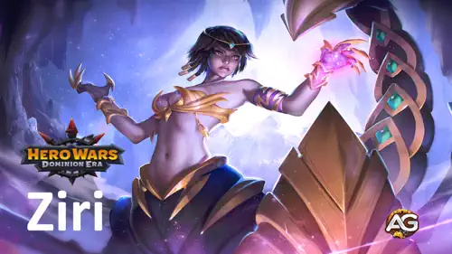
ジリとは？
ジリは揺るぎない信念と圧倒的な耐久力で前線に立つタンクヒーローです。神聖なるサソリの女神アクレブ・ウンミから力を引き出し、敵を挑発して最強の攻撃を引き付けることで味方を守ります。
- クラス：タンク
- ポジション：前衛
- メインステータス：力
「アクレブ・ウンミよ、偉大なるサソリの母よ、忠実な子供を助けたまえ...」この祈りは単なる言葉ではなく、ジリの守りの精神そのものです。激しい攻撃を受けると地面に潜り、ダメージから身を隠しながら回復します。
物理ダメージを完全に反射し、敵のスキルを自分に引き付ける能力を持つジリは、カークやアミラのような英雄に対する完璧なカウンターです。独自のスキルセットと圧倒的な生存能力により、脆い後衛の味方を守りながら時間を稼ぐのに最適です。
ジリの長所と短所 – ヒーローウォーズ：Web版とFacebook版
✅ 長所
- 物理ダメージを攻撃者に完全に反射し、近接ヒーローを罰することができます。
- 敵を挑発し、カークやアミラの第一スキルなどの標的型能力から味方を守ります。
- パッシブによる高い生存能力：大ダメージを受けると地面に潜り、時間経過で回復します。
❌ 短所
- 反射を回避する魔法ダメージ中心のチームに対してはあまり効果的ではありません。
- スタン、凍結、暗闇などの状態異常に弱く、挑発や回復サイクルが中断される可能性があります。
- 地中にいる間は前線が無防備になるため、防御を維持するには別のタンクや護衛が必要です。
ジリのスキル育成優先度 – ヒーローウォーズ ドミニオン エラ
ヒーローウォーズ ドミニオン エラでジリのどのスキルを最初に強化すべきか、そしてそれぞれがチームでのタンク能力にどう影響するかを解説します。
憎しみの焦点
このスキルでジリは叫び、全ての敵を挑発して8秒間味方の代わりに自分を攻撃させます。挑発中はアーマーと魔法防御に大きなボーナスが付き、受けるダメージが軽減されます。
育成優先度： 非常に高い – ジリの核となるタンクツールです。スキルが強いほど、ダメージ吸収とチーム保護の能力が向上します。最優先で強化しましょう。
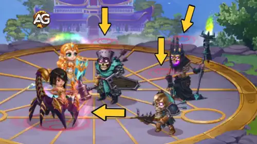
苦痛の反射
このスキルは8秒間、ジリが受けた全ての物理ダメージを攻撃者に跳ね返します。魔法の鏡のようなもので、イシュマエルやケイラのような物理ヒーローに対して非常に有効です。
育成優先度： 高い – 物理ダメージの対決で非常に効果的です。このスキルを強化すると、ジリの脅威度が上がり、彼女を素早く倒そうとするダメージディーラーを罰することができます。
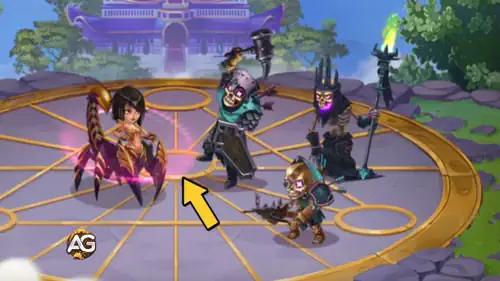
砂の守り
ジリのHPが30%を下回ると、地面に潜って全ての攻撃を回避し、7秒間自己回復します。15秒ごとに自動的に発動します。
育成優先度： やや高い – 長期戦での生存に優れています。敵に集中攻撃された時にジリがより長く持ちこたえられるよう、強化しましょう。
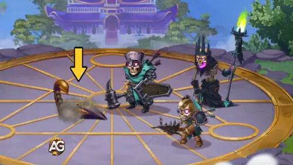
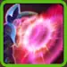
アクレブ・ウンミの怒り
ジリが地中から出現すると、近くの敵をスタンさせてノックバックし、即座に反射スキルを発動します。前線の陣形を崩すのに最適です。
育成優先度： 普通 – 便利ですが、このパッシブはジリが先に地中に潜る必要があります。他のスキルが十分に強化された後に育成しましょう。
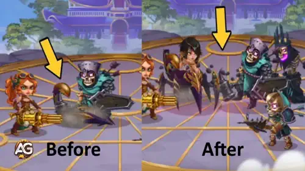
ジリの最適な支援ペット
ヒーローウォーズ ドミニオン エラでジリを支える最も効果的なペットを、戦闘での実用性とタンクスキルとのシナジーに基づいて紹介します。
第1位：

オリバーはジリに最適なペットです。支援効果でHP・アーマーのボーナスが付き、タンクにとって重要なステータスです。さらに重要なのは、ジリのHPが50%を下回ると、オリバーが継続的に回復してくれること。自身の潜行スキルがクールダウン中でも生存し続けられる強力なシナジーが生まれ、前線での存在感が長く維持されます。
第2位：

ビスケットは、ジリが攻撃した敵の回復量を減少させることで防御的にサポートします。これにより敵の持久力を弱め、チームがより速く敵を倒すのを助けます。アーマーも強化され、ジリの高い耐久力を補完しますが、ジリ自身への直接的な回復や生存支援はありません。
第3位：

フェンリス
フェンリスはジリの物理攻撃力を上げ、通常攻撃で敵を暗闇にする確率を付与します。ジリはダメージディーラーではありませんが、敵を暗闇にすることで incoming の物理ダメージを軽減できます。しかしこのペットは攻撃的なタンク向けのため、ほとんどの場合ジリとのシナジーは最も弱いです。
ジリの最適なスキン – ヒーローウォーズ ドミニオン エラ
ヒーローウォーズ ドミニオン エラでジリの最適なスキンを、ステータスボーナスと戦闘での実用性に基づいて紹介します。タンクの力を正しく優先しましょう！
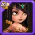
デフォルトスキン
力 +1,365
力の各ポイントはジリのような力タイプのヒーローにHP40と物理攻撃1を付与します。
育成優先度： 高い – 力を上げるとHPと物理攻撃の両方が向上し、ジリの生存能力と全体的なタンク性能が強化されます。汎用的なパワースケーリングに最適です。
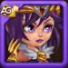
チャンピオンスキン
HP +106,872
育成優先度： 非常に高い – 直接的なHP増加によりジリは倒されにくくなり、砂の守りスキルによる回復量も増加します。タンク最適化に必須です。
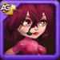
サイバネティックスキン
HP +106,645
育成優先度： 高い – チャンピオンスキンと同様に、生の耐久力と回復効果を向上させます。ステータス値はチャンピオンスキンよりやや低いですが、依然として優秀です。
スプリングスキン
HP +106,645
育成優先度： 高い – サイバネティックスキンと同じステータス値です。耐久力と回復能力とのシナジーが優れていますが、別のHPスキンを最大化済みなら後回しにできます。
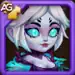
デモニックスキン
アーマー +10,650
育成優先度： やや高い – ジリの物理ダメージ軽減を強化し、特に挑発スキル使用時にタンク性能を向上させます。HPスキンの後に優先しましょう。
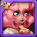
ロマンティックスキン
魔法防御 +10,650
育成優先度： 普通 – 魔法攻撃が多いチームに対してのみ有効です。ジリの基本魔法防御は既に高く、挑発がさらに強化するため、全体的な緊急度は低めです。
ジリのアーティファクト育成優先度 – ヒーローウォーズ ドミニオン エラ
ヒーローウォーズ ドミニオン エラでのジリの最適なアーティファクト強化順を紹介します。タンクとしての潜在能力と戦闘での生存能力を効果的に向上させましょう。
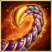
武器：アクレブ・ウンミの針
このアーティファクトはジリが必殺技を使用するたびに発動し、全味方にアーマーボーナス（+50,190）を付与します。チーム全体の物理防御を強化し、特にジリが敵を挑発して攻撃を引き付ける時に有効です。
育成優先度： 非常に高い – ジリの最も重要なアーティファクトです。タンクとしての役割を強化し、チーム全体の生存能力に直接貢献します。必殺技を真に効果的にするため、最初に強化しましょう。

書物：守護者の盟約
このアーティファクトはアーマー（+12,546）と魔法防御（+12,546）の両方をパッシブで向上させ、アクティブスキルがクールダウン中でもジリがあらゆるタイプのダメージに耐えられるよう支援します。
育成優先度： 高い – 安定したダメージ軽減と生存能力に重要です。砂の守りなどのスキルを使用していない時も、パッシブでタンク性能を支えます。

指輪：力の指輪
このアーティファクトはジリの力ステータス（+6,249）を上げ、HPの増加と物理攻撃力のわずかな向上をもたらします。
育成優先度： やや高い – 力はジリのHPプールを増やすのに役立ちますが、他のアーティファクトが提供するアーマーや魔法防御ほどの効果はありません。素早いHP増加が必要でない限り、最後に強化しましょう。
ジリのグリフ育成優先度
ヒーローウォーズ ドミニオン エラでのジリの最適なグリフ強化順を紹介し、タンクとしての潜在能力と戦闘生存能力を向上させます。

第1グリフ – 物理攻撃：
ジリの物理ダメージ（+4,340）を増加させます。ある程度のダメージは出せますが、主な役割はタンクです。このステータスは実用性や生存能力を大幅に向上させるものではありません。
育成優先度： 低い – 物理攻撃はタンクとしてのジリの有効性への影響が最も小さいです。生存能力に集中するなら、後回しにするか無視しても構いません。

第2グリフ – HP：
ジリの最大HPを+62,200増加させます。特に砂の守りで最大HPの割合で回復する時に、生存能力が直接向上します。
育成優先度： 非常に高い – HPはジリにとって最も重要なステータスです。自己回復、耐久力、オリバーなどのペットとのシナジーを強化します。常にこのグリフを最優先にしましょう。

第3グリフ – 魔法防御：
ジリの魔法ダメージへの耐性を+6,500増加させます。挑発スキルと組み合わせることで、オリオン、アミラ、セレステのような魔法使いに対するタンク性能が向上します。
育成優先度： 高い – 魔法攻撃が多いチームに対して重要なグリフです。憎しみの焦点と魔法防御をパッシブで上げるアーティファクトとの相性が良いです。

第4グリフ – アーマー：
アーマーを+6,500増加させます。物理チームに対して優れており、特にジリが敵を挑発して第二スキルで物理ダメージを反射する際に有効です。
育成優先度： 高い – 強力な物理ダメージディーラーに対して非常に有効です。対戦相手に応じて魔法防御と併せて強化しましょう。

第5グリフ – 力：
力を+1,135増加させ、ジリのHPと物理攻撃を向上させます。力から直接スケールするため、耐久力とわずかな攻撃面でのメリットが得られます。
育成優先度： やや高い – 素のHPや耐性ほど重要ではありませんが、全体的なタンク成長には大切です。HP、アーマー、魔法防御の後に優先しましょう。
ジリへのカウンター方法 – ヒーローウォーズ ドミニオン エラ

アミラは力タイプのヒーローを妨害することでジリをカウンターします。デバフによりジリの有効性が大幅に低下し、魔法ダメージはジリの物理ダメージ反射を回避します。

ダンテは高い物理ダメージを与え、ジリのメインステータスである力を減少させるデバフを付与します。これによりHPとダメージが直接弱化されます。遠距離攻撃で挑発を回避し、打ち上げでジリが地中に潜って前線が無防備になった瞬間を突きます。
マッシーとシュルーム

マッシーとシュルームは継続的な魔法ダメージと制御効果でジリを圧倒します。召喚物が挑発の対象を分散させ、ジリが地中にいる間もプレッシャーをかけ続けます。
ポラリス

ポラリスはジリを凍結させ、挑発を中断してスキルサイクルを遅延させます。魔法バーストでスキル発動の合間にある魔法防御の低い隙を突きます。

ヤスミンは後衛にジャンプすることでジリの前線タンクを回避します。これによりジリの挑発の有効性が低下し、ジリが地中にいる間のチーム防御が弱まります。
ジリの最適な戦旗 – ヒーローウォーズ
ヒーローウォーズ ドミニオン エラでジリと組み合わせる最適な戦旗を紹介します。生存能力を高め、チーム戦でのタンク能力を支援します。

熱意の戦旗：
この戦旗はタンクのエネルギー獲得量を10%増加させ、ジリがスキルをより頻繁に発動できるようにします。特にアーマーブーストのアーティファクトと群集制御コンボを発動する必殺技の頻度が上がります。
ジリとチームへの効果： ジリは敵を挑発し味方を守るために、スキルのタイミングに大きく依存します。エネルギー獲得が速まることで、より安定した前線の守り手となり、チーム全体への保護と反射の稼働率が向上します。

回復の戦旗：
この戦旗は全ての回復量を10%増加させ、砂の守りによるジリのパッシブ回復と、オリバーのような回復ペットとのシナジーに直接効果があります。
ジリとチームへの効果： ジリは地中で自己回復するため、追加の回復量で生存ウィンドウが広がります。テアやマーサのようなサポートと組み合わせると、チーム全体の回復効果も強化されます。

ペット強化の戦旗：
この戦旗はペットのスキル効果を10%増加させ、ペットの回復、防御、支援スキルの効果を高めます。特にオリバーやビスケットをジリと組み合わせる時に有効です。
ジリとチームへの効果： ジリは支援ペットから大きな恩恵を受けます。この戦旗でペットの能力が強化され、ジリのタンク性能を支えるシールド、回復、デバフがより強力になります。
ジリの最強チーム – ヒーローウォーズ ドミニオン エラ
ジリの最強防衛チーム
- ジリ、フォリオ、アウグストゥス、ポラリス、マーサ、ホルズ
- ジリ、ダンテ、オリオン、アウグストゥス、テア、ホルズ
- ジリ、リリア、ケイラ、セバスチャン、ララ・クロフト、ホルズ
- ジリ、リリア、トリスタン、ケイラ、セバスチャン、アクセル
ジリの最強攻撃チーム
- ホルズ、マーサ、ポラリス、アウグストゥス、フォリオ、ジリ
- ホルズ、テア、アウグストゥス、オリオン、ダンテ、ジリ
- ホルズ、ララ・クロフト、セバスチャン、ケイラ、リリア、ジリ
- アクセル、セバスチャン、ケイラ、トリスタン、リリア、ジリ
まとめ – ジリは育てる価値がある？
ジリはプレッシャーの中で真価を発揮する回復力の高い前衛タンクで、敵の攻撃をチームの防御に変えます。物理ダメージを反射し、致命的な一撃を吸収し、地中に潜って生き残る独自の能力により、あらゆる編成に驚異的な耐久力と制御力をもたらします。魔法攻撃や高い制御効果を持つチームには苦戦しますが、適切なサポート、ペット、戦旗の組み合わせで、破壊不可能な守護者に変貌させることができます。
防御の要塞を築く場合でも、カウンターパンチ戦略を構築する場合でも、ジリはタイミング、シナジー、ポジショニングを理解するプレイヤーに報いてくれます。適切に投資し、彼女の強みを活かした編成を組めば、ジリはヒーローウォーズ ドミニオン エラの攻守両面で試合を変える切り札となるでしょう。
注目のヒーローで新しいスキルを発見しよう！


ご意見をお聞かせください！
ヒーローウォーズ Web版とFacebook版のジリ攻略ガイドはいかがでしたか？わからないことや変更の提案はありますか？Alexandre Gamesブログのコメント欄にぜひご参加ください。ご意見の共有、疑問の解消、提案などお気軽にどうぞ。
下のボタンをクリックして始めましょう：